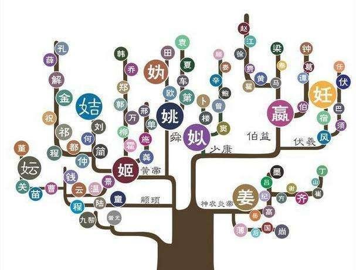
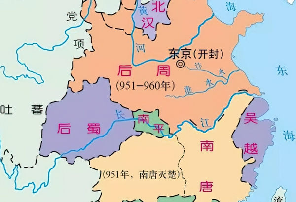
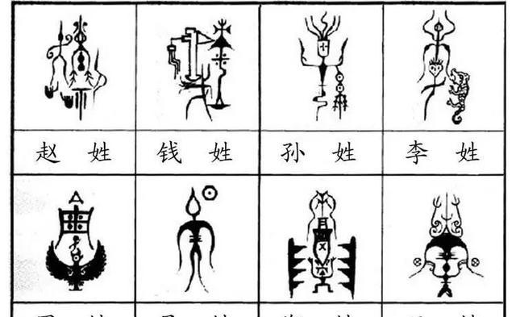
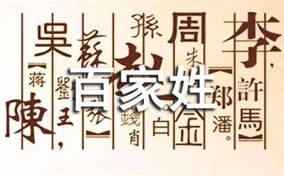

《百家姓》既是一本启蒙教材，也是一本记录中国姓氏的书籍。其内容来源于姓氏的发展。在《百家姓》之前，有关姓氏的文字记载可以上溯至商代甲骨文。
战国时有史官编著的《世本》， 记载黄帝至春秋时期诸侯大夫的姓氏、世系、居邑等等，可惜到宋朝已经逐渐毁坏。
据历史文献的记载，姓氏可以追溯到人类原始社会的母系氏族制度时期，中国早起出现的姓氏都是女字旁或部首，如姬姓、姚姓等。当时的姓是作为区分氏族的特定标志符号，
如部落的名称或部落首领的名字。传说黄帝住姬水之滨，以姬为姓；炎帝居姜水之旁，
以姜为姓。皇天以大禹治水有功，赐姓为姒。
此外，部落首领之子亦可得姓。黄帝有二十五子，得姓者十四人，为姬、酉、祁、己、滕、任、荀、葴、
僖、姞、儇、依十二姓，
其中有四人分属二姓。
祝融之后，为己、董、彭、秃、妘、曹、斟、芈等八姓，史称祝融八姓。
随着社会生产力的发展，母系氏族制度过渡到父系氏族制度，氏族制度逐渐被阶级社会制度所替代，赐土以命氏的治理国家的方法、手段便产生了。
氏的出现是人类历史的脚步在迈进阶级社会。姓和氏，是人类进步的两个阶段，是文明的产物。夏、商时期，贵族皆有姓氏。
姓的分支为氏，意思相当于家或族。夏王室为姒姓，另有霸主昆吾为己姓，己姓中有苏、顾、温、董、豢龙等氏。
商王室为殷姓，另有霸主大彭、豕韦为彭姓。商代还有条氏、徐氏、萧氏等十三个姓。周代是中国姓氏大发展的一个重要时期，姓氏制度见于记载较多。
这些姓氏的发展，是《百家姓》得以成文的历史背景。 百家姓的排名只是名义上的，虽然有字面上的这么多姓。
因为某些姓氏虽然在字面上不同，实际上部分姓是从某姓衍生出来的，比如姚姓， 据2005年在湖南零陵召开的全球华人公祭舜帝大会上的最新统计，
由姚姓衍生出的姓氏达60个之多，如王、陈、胡、孙、虞、田、袁、车、陆等姓氏，流布于世界40多个国家和地区。
五帝之一的舜，其后子孙以姚为氏，称为姚氏。因舜帝居姚地（河南濮阳），有子孙以姚为姓，称为姚氏。
舜在当帝之前，有搬到妫河边居住，他们的子孙有留在妫河边居住的，即以妫为姓。舜帝登帝位后，仁德荣耀，有子孙以帝名舜为姓，
禹封皇舜长子商均于虞，至始祖四十三世孙妫满封于陈，谥胡公，其子孙或以国号陈称姓，或以谥号胡称姓，或以尊讳满称姓。
《通志·氏族略》言：“虞有二姓，曰姚曰妫。因姚墟之生而姓姚，因妫水之居而姓妫。”因而史称妫、陈、田、姚、胡为 “妫汭五姓”。
演变至汉朝，姚姓衍生出：妫、舜、虞、陈、胡、田、袁、王、孙、陆、车等六十种，繁姓同根，异氏同源，是一家亲。
在中华姓氏中，妫、陈、田、姚、胡五姓同根同源，其血缘先祖同为舜帝姚姓。
如今中国人的姓，大部分是从几千年前代代相传下来的。有人统计，文献记载和现存的共有5600多个。
其特点是：源远流长、内容丰富、出处具体。姓氏的形成各有不同的历史过程。
同姓不一定是同源，如刘姓就有五处起源。异姓也可能是同出一宗，姓古、吴两姓本是同源，都是古公先祖的后裔。
唐太宗的时候──公元627年，有个吏部尚书高士廉，把民间的“姓”记录下来，写成一本书《氏族志》，
颁布天下，作为当时推举贤能作官，或撮合婚姻的依据。
《百家姓》是我国宋元明清时期广为流行的蒙学识字教材。作者不详。成书于宋代初年。南宋人王明清考证说：“如市井间所印《百家姓》，明清尝详考之，
似是两浙钱氏有国时小民所著。何则？其首云：‘赵、钱、孙、李’，盖钱氏奉正朔，‘赵’乃本朝国姓，所以‘钱’次之，‘孙’乃忠懿之正
妃，又其次则江南‘李’氏。次句云：‘周、吴、郑、王’，皆武肃而下后妃。无可疑者。”


按，赵匡胤于公元960年夺取北周政权，
改国号为宋。当时全国尚未统一，摄于宋的威势，地方割据政权如南唐、吴越等国纷纷向宋称臣入贡。宋则坚持武力统一中国方针，
用了十余年时间，先后灭掉各地割据政权，最后结束五代十国局面。其中李氏建立的南唐政权、钱氏建立的吴越政权先后于公元975年和978年被灭。
从公元960年至978年，“钱氏奉正朔”共有18年之久。王明清的结论是，《百家姓》即成书于这期间，乃吴越不知名的“小民”所编。
《百家姓》以“赵、钱、孙、李”开头是尊宋朝国姓为首，把吴越国姓放在其次。
“孙”是最后归降宋朝的吴越君主钱 （忠懿）之正妃，“李”指南唐李姓君主。次句“周、吴、郑、王”乃吴越开国君主钱鏐（武肃）以下诸帝后妃之姓。
王明清为南宋时人，靠近《百家姓》成书时期，而且有材料说《百家姓》于宋代即已盛行。

所以后人同意王的说法，对于《百家姓》成书时期向无争议。
如明人朱国桢说：“今《百家姓》，以为出于宋、故首以‘赵，钱、孙、李’，尊国姓也。”
谈迁在《枣林艺蒉》中也说：“《百家姓》相传宋人作，故首赵。”可是谈迁又说：“《南雍志》有唐虞世南《百家姓》一卷。
”可知唐代已有《百家姓》，只是没有流传下来。后来流传的则是宋初所编以赵字打头的《百家姓》。
《百家姓》是一本关于中文姓氏的书，成书于北宋初（公元960年）。原收集姓氏411个，后增补到504个，其中单姓444个，复姓60个。
发展到后来，据说有4000到6000个，但是实际应用的，只有1000个左右。
华人最大的十个姓是：张、王、李、赵、陈、杨、吴、刘、黄、周。这十个姓占华人人口40%，约四亿人。
第二大的十个姓是：徐、朱、林、孙、马、高、胡、郑、郭、萧。占华人人口10%以上。
第三大的十个姓是：谢、何、许、宋、沈、罗、韩、邓、梁、叶。占华人人口10%。
接下来的15个大姓是：方、崔、程、潘、曹、冯、汪、蔡、袁、卢、唐、钱、杜、彭、陆，加起来也占总人口的10%。